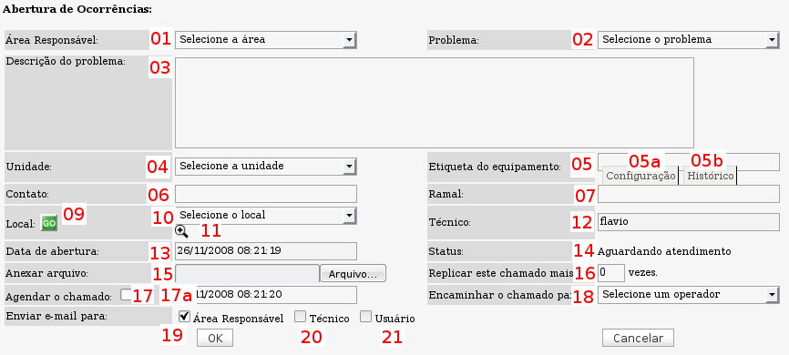
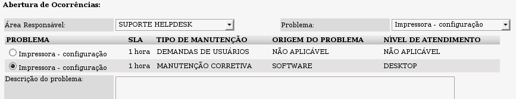

Abertura de chamados (Ocorrências -> Abrir Chamado)

Tela de abertura completa - versão 2.0rc3
01 - Campo para seleção de área de atendimento. Uma área de atendimento pode ser um segmento da área de TI que executará o atendimento ao chamado.
Exemplos de possíveis áreas de atendimento: Helpdesk nível 1, Helpdesk nível 2, Infraestrutura, Departamento de Redes, etc...
02 - Campo para seleção de problema. Um problema é uma classificação de tipos de falhas, defeitos ou erros possíveis para resolução ou ainda procedimentos ou atividades para execução. A listagem de problemas exibidas nesse campo é resultante da seleção do campo Área de atendimento. Os problemas podem ser vinculados à uma área de atendimento específica ou a todas as áreas.
Exemplos de possíveis problemas: Configuração de e-mail, Backup, Instalação de S.O., Instalação de impressora, Erro de sistema, Treinamento, etc..
* Cada problema é vinculado a um tempo de solução desejável, utilizado para controle de SLAs.
- Cada problema pode possuir até 3 categorias e diversas sub-categorias com diferentes tempos de solução. Por exemplo, um problema pode ser classificado quanto à origem do problema como sendo de hardware ou de software, quanto ao tipo de manuteção como sendo preventiva ou corretiva, quanto ao nível de atendimento como sendo em Desktop ou Servidor. O tipo de categoria e sub-categorias é criado pelo próprio administrador do sistema de acordo com suas necessidades.
- A seleção das categorias e sub-categorias é possível após a seleção do campo problema, pois é quando são exibidas as possíveis alternativas. Veja a tela a seguir:

Tela de abertura de chamados exibindo as alternativas de classificação após a seleção do problema.
03 - Campo para descrição do problema. Esse campo serve para a descrição textual do problema relatado pelo usuário. Quanto maior for o detalhamento da descrição mais fácil será para o técnico entender o problema e assim ser objetivo na sua solução.
04 - Campo para seleção de Unidade. O Ocomon utiliza o campo
Unidade em conjunto com o campo
Etiqueta para designar o identificador único de cada equipamento cadastrado no módulo de inventário. Isso significa que podemos ter mais de um equipamento com o mesmo número de etiqueta porém com unidades distintas. O campo unidade pode também ser entendido pelo conceito de filial, assim é possível cadastrar todos os equipamentos de uma mesma filial com uma mesma unidade, facilitando o entendimento rápido sobre a origem do equipamento. Outra forma de utilização deste campo é imaginá-lo como um prefixo alfanumérico para cada etiqueta de numeração sequencial.
05 - Campo para informar a etiqueta do equipamento. Juntamente com o campo Unidade, o campo Etiqueta designa para qual equipamento está sendo aberto o chamado em questão. Ao informar a unidade e o número da etiqueta o chamado ficará vinculado ao equipamento que possuir a etiqueta com a unidade e número informado, permitindo o rastreamento, verificação de reincidências e informações de configuração já na tela de abertura do chamado.
5a - Link para acesso às informações de configuração do equipamento para qual o chamado está sendo aberto. Após informar a unidade e o número da etiqueta basta clicar no link
Configuração para visualizar as informações de configuração do equipamento. Na tela resultante, além das informações de hardware, é possível verificar itens como: garantia, softwares, histórico de trocas de peças, histórico de movimentações, e diversas outras informações do equipamento.
5b - Link para acesso rápido ao histórico de chamados do equipamento para qual o chamado está sendo aberto. Após informar a unidade e o número da etiqueta basta clicar no link
Histórico para ter acesso à listagem de chamados já abertos para o equipamento em questão.
06 - Campo para informar o contato origem do chamado. Em geral o contato é a pessoa solicitante do atendimento.
07 - Campo para informar o telefone do contato origem do chamado. Pode ser o uma ramal (caso o sistema seja interno) ou o telefone para contatar o usuário origem do chamado.
08 - Esse item não consta na imagem de demonstração da tela de abertura de chamados.
09 - Botão para carregamento automático do local do equipamento. Se preenchidas as informações de unidade e etiqueta do equipamento, ao clicar no botão "
GO" o campo de localização será preenchido automaticamente com a localização do equipamento para qual o chamado está sendo aberto, agilizando o processo de abertura de chamados.
10 - Campo para seleção manual do local onde está localizado o equipamento para o qual o chamado está sendo aberto. Esse campo representa o departamento/setor físico onde se encontra o equipamento. Ex: Contabilidade, almoxarifado, sala 310, etc...
11 - Botão para acesso à listagem de todos os equipamentos cadastrados para o local selecionado. Ao selecionar um local, basta clicar no ícone da lupa com o sinal de "
+" e será exibida a listagem de todos os equipamentos cadastrados para o local selecionado.
12 - Esse campo exibe o login do operador logado no sistema.
13 - Esse campo exibe a data e hora corrente.
14 - Esse campo exibe o status inicial do chamado.
15 - Campo para anexar arquivos ao chamado. O administrador do sistema define os tipos de arquivos permitidos. Os tipos possíveis são: imagens (jpg, jpeg, bmp, gif ou png), TXT, PDF, arquivos ODF (odt, ods, odp, odg), arquivos do OpenOffice.Org (sxw, sxc, sxi, sxd), arquivos MS Office (doc, xls, ppt), rtf, html, htm. Até a versão 2.0rc3 só é possível anexar um único arquivo na abertura do chamado. Outros arquivos podem ser adicionados na edição do chamado.
16 - Campo para replicar o chamado. Em alguns casos, pode existir a necessidade de abertura de chamados em lote e esse campo possibilita essa ação. Ex: Caso se queira abrir 5 chamados iguais, basta abrir um e definir que o chamado será replicado mais 4 vezes.
17 - Checkbox para definir que o chamado será agendado. O OcoMon permite que se agende um chamado para uma data/hora futura. Ao agendar um chamado o mesmo só entrará na fila de atendimento na data/hora programada. Para definir o chamado para agendamento é necessário marcar a checkbox "
Agendar o chamado", após isso será necessário definir a data/hora do agendamento.
Importante: para o funcionamento correto desta função, é necessário realizar as configurações de status para chamado agendado na abertura e agendado na edição. Para entender melhor sobre isso acesse a página que explica sobre as
configurações gerais do sistema.
17a - Campo para definir a data de agendamento quando o checkbox "
Agendar o chamado" estiver marcado. Ao agendar um chamado o mesmo só entrará na fila de atendimento na data/hora programada. É necessário preecher esse campo com a data e hora completas.
OBS: caso a data informada nesse campo não seja uma data futura, o chamado não será agendado, e entrará diretamente para a fila de atendimento.
18 - Campo para encaminhamento do chamado. O OcoMon permite que um chamado possa ser direcionado diretamente à um técnico específico sem entrar na fila de atendimento padrão. Ao direcionar o chamado para um técnico, o chamado ficará com status previamente definido pelo administrador para esse tipo de situação.
Chamados marcados para agendamento não podem ser encaminhados.
19 - Checbox para envio de e-mail para a área de atendimento. Ao marcar esse item, um e-mail será enviado para a área responsável pelo atendimento do respectivo chamado informando sobre a abertura do mesmo. Esse item vem marcado por padrão na abertura de chamados. O modelo de e-mail enviado é definido previamente pelo administrador do sistema.
20 - Checkbox para envio de e-mail para o técnico responsável pelo atendimento do chamado. Essa checkbox só estará habilitada para os casos onde for selecionado um técnico no campo de
encaminhamento de chamados (item 18). O modelo de e-mail enviado é definido previamente pelo administrador do sistema.
21 - Checkbox para envio de e-mail para o usuário solicitante do atendimento. Atualmente (versão 2.0rc3), essa função está desabilitada na tela de abertura de chamados.
A partir da versão 2.0RC5, há também o campo:
Prioridade. Para saber sobre o papel desse campo acesse a documentação sobre
Prioridades de atendimento.
Após aberto o chamado, o mesmo ficará visível na
tela de abertura do módulo de ocorrências para todos os técnicos/operadores da área de atendimento para qual a mesma foi direcionada.